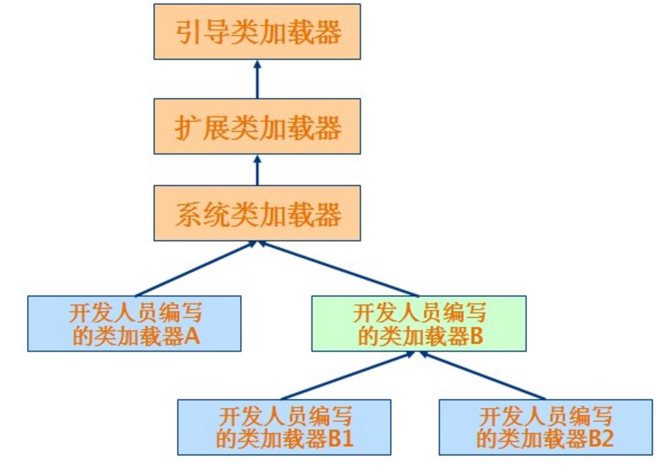
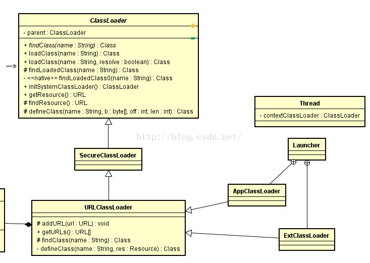
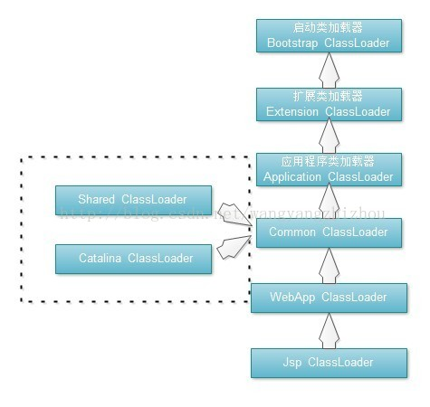

Java虚拟机双亲委托+Tomcat破坏双亲委托
Don’t be jealous of others. Because you never know how much you will get in the next second.
首先说一下大家都知道的Java虚拟机中的双亲委托模型，如果一个类加载器接受到类加载的请求，它首先不会自己去尝试加载这个类， 而是把这个请求委托给父类加载器去完成，每一个加载器都是如此，因此所有的加载请求都会床送到顶层的启动类加载器， 只有当父类加载器反馈自己无法完成这个记载请求（它的搜索范围中没有所需要的类）时，子类加载器才会自己去尝试加载。

从java虚拟机的角度来看，分为两种不同的类加载器：
一种是启动类加载器（Bootstrap ClassLoader），这个类加载器使用C++语言实现，是虚拟机的一部分
另一种是所有其他类的加载器，由java实现，独立于虚拟机外部，并且都继承自抽象类java.lang.ClassLoader，主要有以下几个核心类：
ClassLoader：所有类加载器的基类，它是抽象的，定义了类加载最核心的操作。
SecureClassLoader：继承自ClassLoader，添加了关联类源码、关联系统policy权限等支持
URLClassLoader：继承自SecureClassLoader，支持从jar文件和文件夹中获取class
ExtClassLoader：扩展类加载器，继承自URLClassLoader，负责加载java的扩展类(javax.*等)，查看源码可知其查找范围为System.getProperty(“java.ext.dirs”)，通常是jre/lib/ext
AppClassLoader：应用类加载器，继承自URLClassLoader，也叫系统类加载器（ClassLoader.getSystemClassLoader()可得到它），它负载加载应用的classpath下的类，查找范围System.getProperty(“java.class.path”)，通过-cp或-classpath指定的类都会被其加载

双亲委托模型具体代码的实现（取自ClassLoader.java）：
protected Class<?> loadClass(String name, boolean resolve) throws ClassNotFoundException
{
synchronized (getClassLoadingLock(name)) {
// First, check if the class has already been loaded
Class<?> c = findLoadedClass(name);
if (c == null) {
long t0 = System.nanoTime();
try {
if (parent != null) {
//使用父加载器加载
c = parent.loadClass(name, false);
} else {
//如果parent为null，则为根加载器
c = findBootstrapClassOrNull(name);
}
} catch (ClassNotFoundException e) {
// ClassNotFoundException thrown if class not found
// from the non-null parent class loader
}
if (c == null) {
// If still not found, then invoke findClass in order
// to find the class.
long t1 = System.nanoTime();
c = findClass(name);
// this is the defining class loader; record the stats
sun.misc.PerfCounter.getParentDelegationTime().addTime(t1 - t0);
sun.misc.PerfCounter.getFindClassTime().addElapsedTimeFrom(t1);
sun.misc.PerfCounter.getFindClasses().increment();
}
}
if (resolve) {
resolveClass(c);
}
return c;
}
}好，这种双亲委托模型并不是一个强制性的约束模型，有两种方法可以对这种模型进行破坏。
1.重写loadClass()方法破坏双亲委托模型。双亲委托是在JDK1.2以后才引入的，在JDK1.2之后的java.lang.ClassLoader添加了一个 新的protected方法findClass()，把自己的类加载逻辑写到这个方法中，在loadClass方法中如果父类加载失败，则调用自己的findClass()来完成加载， 这样保证双亲委托模型。好，那如果我们直接重写loadClass.
@Override
public Class<?> loadClass(String name) throws ClassNotFoundException {
try {
String fileName = name.substring(name.lastIndexOf(".") + 1) + ".class";
InputStream is = getClass().getResourceAsStream(fileName);
if (is == null) {
return super.loadClass(name);
}
byte[] b = new byte[is.available()];
is.read(b);
return defineClass(name, b, 0, b.length);
}
catch (Exception e) {
throw new ClassNotFoundException(name);
}
}就不会把请求委托给父类加载器，而是自己去加载该类。
2.第二种破坏双亲委托模型的方式是线程上下文类加载器（Thread Context ClassLoader），这个类加载器通过可以通过Thread类中的 setContextClassLoader()方法进行设置，如果创建线程时还未设置，它将会从父线程中继承一个，如果在应用程序的全局范围内都没有设置过， 那么这个类加载器默认就是应用类加载器，有了这个线程上下文加载器，就可以实现父类加载器请求子类加载器去完成类加载的动作，而这种方式违背了双亲委托。 Tomcat中使用Spring就实现了这种方式，首先web服务器要解决以下问题：
① 同一个Web服务器里，各个Web项目之间各自使用的Java类库要互相隔离。
② 同一个Web服务器里，各个Web项目之间可以提供共享的Java类库。
③ 服务器为了不受Web项目的影响，应该使服务器的类库与应用程序的类库互相独立。
④ 对于支持JSP的Web服务器，应该支持热插拔（hotswap）功能。
如图所示，tomcat7中，启动类加载器、扩展类加载器、应用程序类加载器这三个类加载器数据JDK级别的加载器，他们是唯一的， 我们一般不会对其做任何更改。接下来则是Tomcat的类加载器，在tomcat7中，最重要的一个类加载器是Common ClassLoader， 它的父类加载器是ApplicationClassLoader，负责加载 $CATALINA_BASE/lib、 $CATALINA_HOME/lib两个目录下所有的.class跟.jar文件。 而下面虚线框的两个类加载器有必要说明一下，如果在Tomcat5版本，这两个类加载器实例默认与Common ClassLoader实例不同， Common ClassLoader为他们的父类加载器。而在Tomcat7中，这两个实例变量也存在，只是catalina.properties配置文件没有对server.loader 跟share.loader两项进行配置，所以在程序里，这两个类加载器实例就被赋值为CommonClassLoader实例，即一个tomcat实例其实就只有CommonClassLoader实例。

WebAppClassLoader从名字来看就大概知道主要用于加载Web应用程序的，它的父类加载器是Common ClassLoader，一般有多个WebApp类加载器实例，每个类加载器加载一个Web程序，加载路径为/WebApp/WEB-INF目录。最后，JSP ClassLoader则是负责加载jsp文件编译出来的class，WebApp ClassLoader为它的父类加载器，当Tomcat检测到jsp文件有改动时，会创建一个新的JSP ClassLoader并替换掉当前的JSP ClassLassLoader，对/WebApp/WEB-INF目录下的JSP进行加载，实现热部署功能。
对照这样的一个类加载器结构，看看上面Java Web服务器需要解决的问题是否解决。由于每个Web应用项目都有自己的WebApp ClassLoader，很好地使多个Web应用程序之间互相隔离；并且能有效使Tomcat不受Web应用程序影响；Common ClassLoader的存在使多个Web应用程序能够互相共享类库；而每一个JSP文件对应一个Jsp ClassLoader则可以使Tomcat支持热替换功能。
最后，tomcat使用Spring是如何破坏双亲委托的，如果有10个Web应用程序都是用Spring来组织管理的话，可以把Spring放到Common目录让这些程序共享。Spring要对用户程序的类进行管理，自然要能访问用户程序的类，而用户程序是放在／WebApp/WEB-INF下的，那么被Commom ClassLoader加载的Spring如何访问并不在其加载范围内的用户程序呢？就是通过线程上下文类加载器去破坏双亲委托模型。